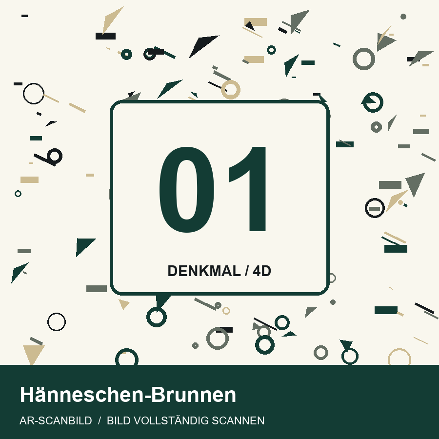
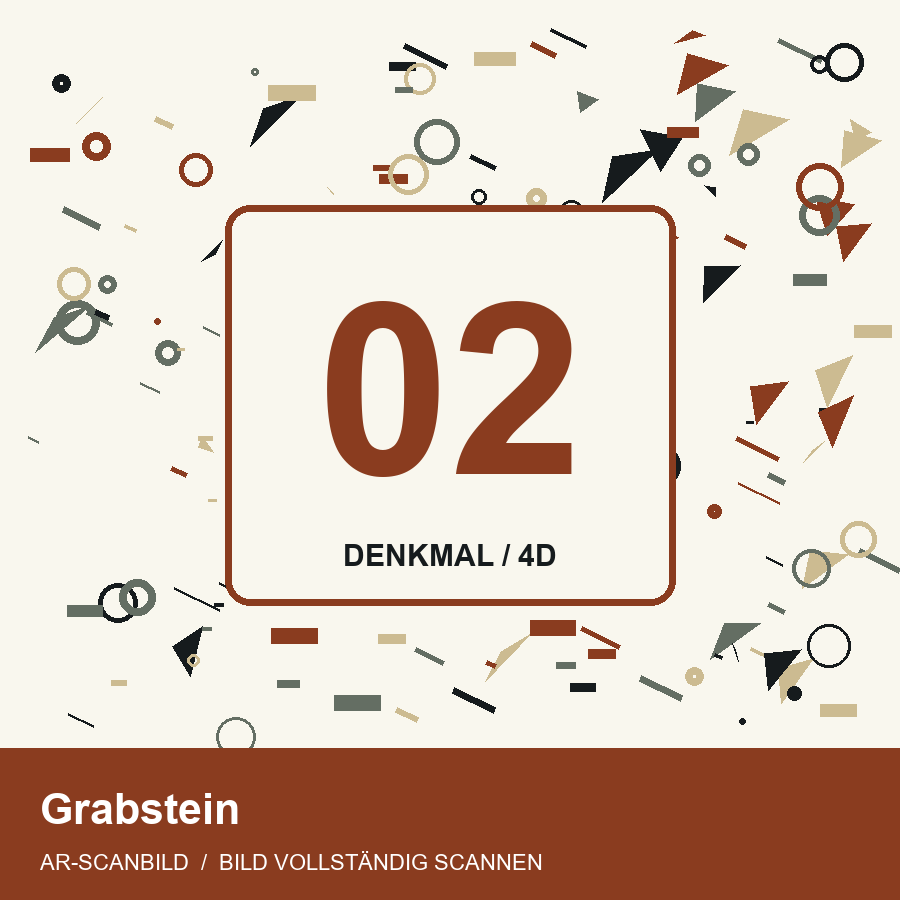
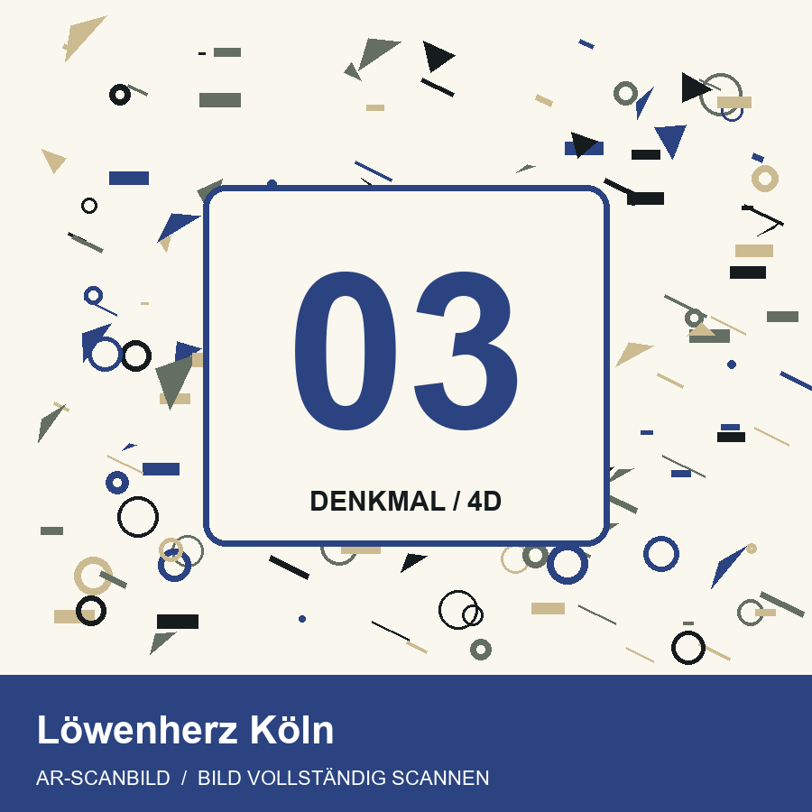
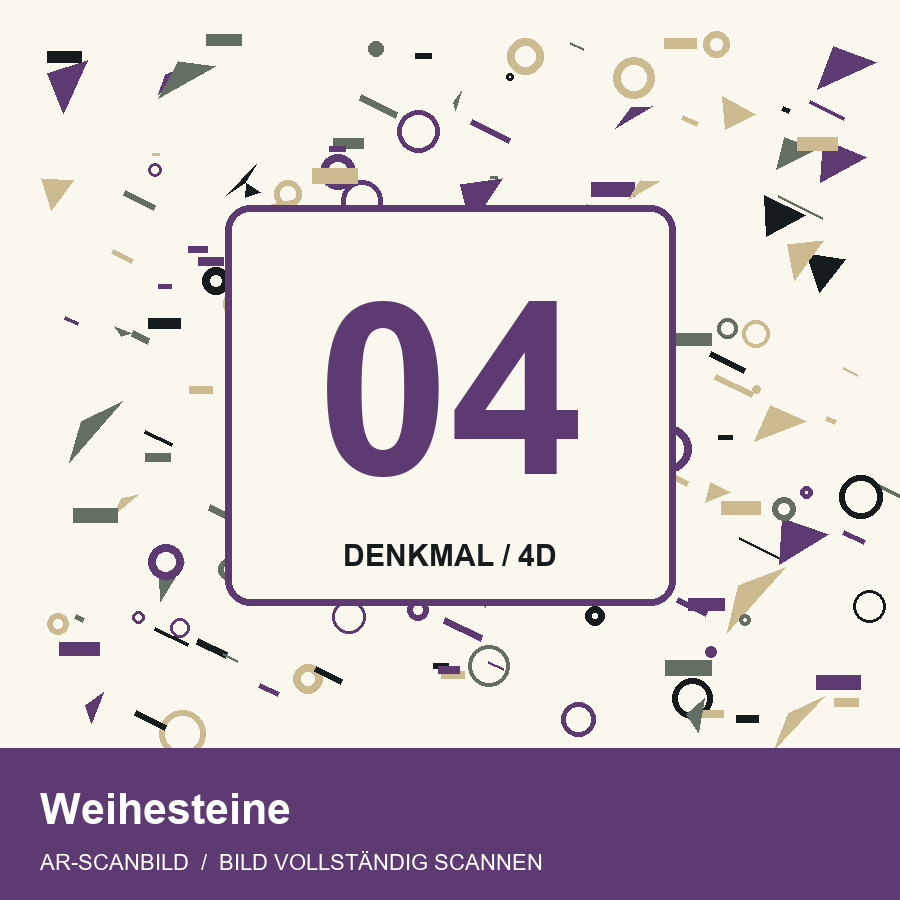

VIER BILDER. VIER OBJEKTE.
Lege die vier Scanbilder nebeneinander. Jedes Bild zeigt sein eigenes Modell – auch mehrere gleichzeitig.




Gutes Licht, wenig Spiegelungen, langsam bewegen. Vier Modelle benötigen mehr Leistung. Die Kamera startet erst nach deinem Tippen.